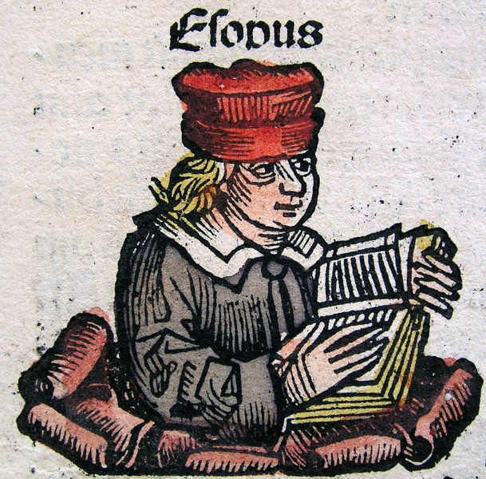

양치기 소년 의 작가
|  | |
아이소포스(이솝) | Aisōpos(Aesop)(B.C 620 ~ B.C 564) |
|
이야기와 작가에 관한 간단한 소개 |
|
| 제목 (Title) | 작가 (Writer) |
| 양치기 소년 | 이솝 지음 (이솝 우화) |
| The Boy Who Cried Wolf(the shepherd boy and the wolf) | Aesop (Aesop's fable) |
소 개 |
|
|
이 이야기는 기본적으로 도덕적인 명제나 인간이 해야할 도리를 이야기화 해낸 우화이다. 이 우화는 대개의 경우 동물이 등장하지만 이솝의 우화의 경우에는 사람의 어리석은 행동을 풍자함으로서 읽는 이에게 하여금 교훈을 주려는 의도로 지어낸 이야기가 많다. 특히 이 '양치기 소년'의 경우에는 거짓말으로 하여금 사람들의 미움과 불신을 사지 말아야 한다는 교훈을 전달한다. 실제 극중에서도 양치기 소년이 처음 늑대 떼가 나타났다고 할 때에는 사람들이 믿어주었지만, 날이 가면 갈수록 느는 거짓말에 마을 주민들은 환멸감과 불신감을 느꼈고, 실제 상황에서는 더 이상 주민들이 도움을 주기 위해 찾아오지 않아 양들이 잡아먹히는 전개로 끝이 나는 이야기이다. 이러한 사람이 거짓말을 한다는 어리석은 행동을 풍자해 주로 어린이들에게 '거짓말은 나쁜 것이다'라는 선한 인식을 심어주고 있으며, 이솝은 이 외에도 여러 우화를 집필했다. 우리가 흔히 아는 개미와 배짱이, 금도끼 은도끼, >여우와 두루미, 여우와 포도, 토끼와 거북이 등의 많은, 우리가 흔히 아는 우화들을 집필했다. |
|
Copyright ⓒ 2022, All Right Reserved by
 컴퓨터소프트웨어공학과 20223517 방제영
컴퓨터소프트웨어공학과 20223517 방제영
컴퓨터소프트웨어공학과 20223517 방제영